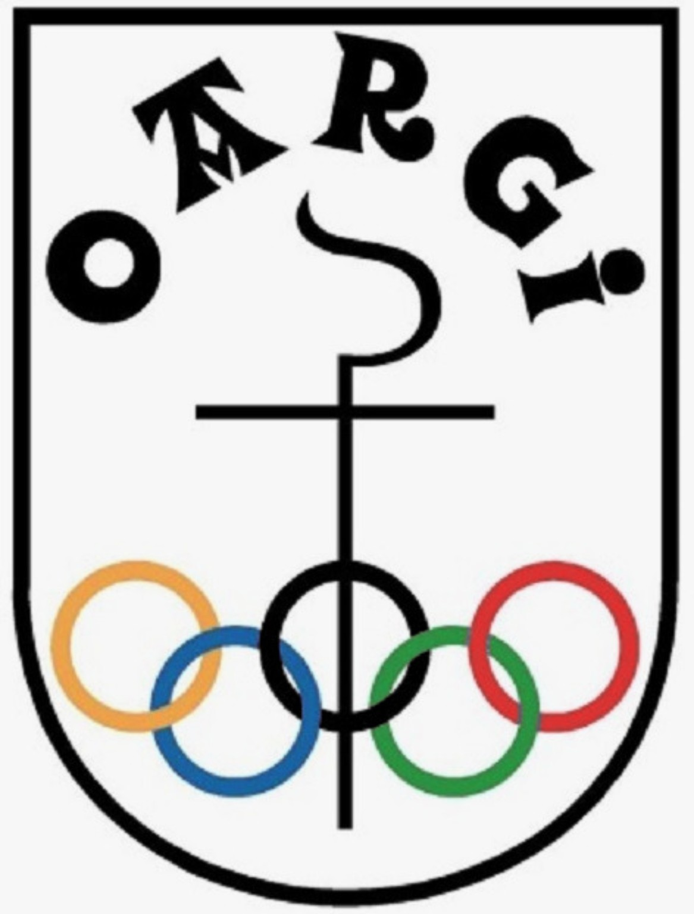

Oargi
Open 1 y 2
Consulta de resultados, calendario y clasificación →
Oargi T.M.TOLOSA · GIPUZKOA · EUSKADI
Pasión, competición y tenis de mesa desde los años 80
OARGI MENDI ELKARTEA
Oargi Mendi Elkartea es una asociación privada sin ánimo de lucro. Dentro de sus distintas modalidades deportivas, esta web se centra en la actividad de tenis de mesa.
La práctica federada comenzó en los años 80 y desde entonces el club ha participado en competiciones provinciales, autonómicas y estatales. Oargi apuesta por un deporte abierto, inclusivo y con especial impulso al deporte femenino.
COMPETICIÓN
Dos equipos, una misma pasión.
Open 1 y 2
Consulta de resultados, calendario y clasificación →POLIDEPORTIVO USABAL
Entrenamos tres días a la semana en Tolosa.
ACTUALIDAD
Información y novedades del club.
Real Federación Española de Tenis de Mesa
Leer más →Federación Vasca de Tenis de Mesa
Leer más →Federación Guipuzcoana de Tenis de Mesa
Leer más →AGENDA
Consulta el calendario oficial del club.
Haz clic en el siguiente enlace para ver o descargar el calendario.
HISTORIA
Una historia que sigue creciendo.
Un espacio para reunir títulos, ascensos, campeonatos y otros logros destacados de Oargi.
Inicio de la actividad federada de tenis de mesa.
Participación en competiciones provinciales, autonómicas y estatales.
Espacio preparado para incorporar títulos, ascensos y logros.
Año · competición · categoría · título o ascenso
Imágenes, vídeos y contenido multimedia del club.
Klubeko irudiak, bideoak eta multimedia edukia.